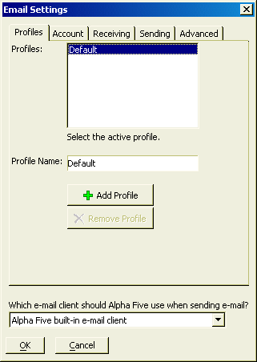

UI_EMAIL_SETTINGS()
Syntax
UI_EMAIL_SETTINGS()
Description
UI_EMAIL_SETTINGS() displays the Email Settings dialog box in which a user can set their email settings. These settings are used when you send email using the built-in email feature in Alpha Anywhere, rather than the default email client (such as Eudora or Outlook ).

 Note : Email settings are stored in the registry. You can also set these values using Xbasic, with the REGISTRY.LOAD_SETTINGS()and REGISTRY.SAVE_SETTINGS()methods.
Note : Email settings are stored in the registry. You can also set these values using Xbasic, with the REGISTRY.LOAD_SETTINGS()and REGISTRY.SAVE_SETTINGS()methods.
Limitations
Desktop applications only.
Example
em.client_hostname = "" registry.load_settings("\init\email",em) 'This creates the following "dot" variables: 'em.client_hostname 'e.client_identity = em.client_identity 'e.client_password = em.client_password 'e.client_USERname = em.client_USER_name 'e.mail_hostname = em.mail_hostname 'You can set and then resave to the registry with the command: registry.save_settings("\init\email", em) |
See Also
((User Interaction _UI_ Functions|User Interaction (UI) Functions)), Email Functions and Methods